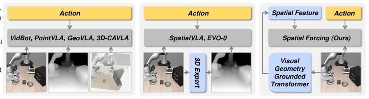
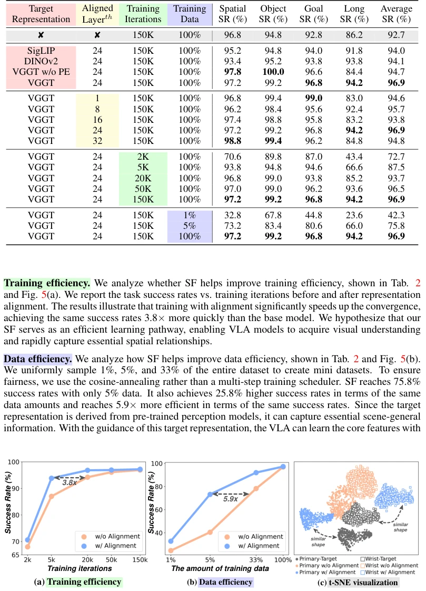

Spatial Forcing: Implicit Spatial Representation Alignment for Vision-language-action Model
Fuhao Li, Wenxuan Song, Han Zhao, Jingbo Wang, Pengxiang Ding, Donglin Wang abspdf
论文点评Review
这篇论文给 VLA 模型搞了个“空间强制矫正”。核心思路挺妙：既然 2D 预训练的 VLA 不懂 3D，那就找个懂 3D 的模型（VGGT）来当老师，对齐中间层特征。不用改推理架构，训练时加个对齐损失，推理时白嫖空间能力。效果确实猛，LIBERO 和 RoboTwin 都刷榜，训练快 3.8 倍，数据少也能跑。但有个槽点：虽然推理不用 3D 传感器，但训练时得依赖 VGGT 这种重型 3D 基础模型，算不算“白嫖”？另外，对齐中间层虽然有效，但没细说为什么不是最深层，可能损失了太多语义？总之，是个简单粗暴但好用的 trick，适合不想折腾硬件的机器人团队。
This paper implements a 'spatial forcing correction' for VLA models. The core idea is quite ingenious: since 2D-pretrained VLA models do not understand 3D, find a 3D-literate model (VGGT) to act as a teacher and align intermediate layer features. No need to modify the inference architecture; add an alignment loss during training, and leverage spatial capabilities at no cost during inference. The results are indeed impressive; it tops the leaderboard on both LIBERO and RoboTwin, training is 3.8x faster, and it works even with less data. But there is a drawback: although inference does not use 3D sensors, training relies on heavy 3D foundation models like VGGT, does this count as 'free riding'? Additionally, although aligning intermediate layers is effective, it is not explained in detail why not the deepest layers, potentially losing too much semantics? In short, it is a straightforward yet effective trick, suitable for robot teams that do not want to tinker with hardware.
研究动机Motivation
现有 VLA 模型大多基于 2D 视觉语言模型（VLM）构建，缺乏精确的空间感知能力，难以适应 3D 物理世界。虽然已有工作尝试引入深度相机或点云等显式 3D 传感器输入（Chen et al., 2025; Li et al., 2025a），但面临传感器噪声、硬件异构及数据集深度信息缺失等挑战。另一些方法通过深度估计器从 2D 图像推断 3D 信息（Qu et al., 2025），但性能受限于估计器本身。因此，如何在不依赖显式 3D 输入的情况下，隐式赋予 VLA 空间理解能力，成为关键问题。作者通过深度探测实验发现，原始 VLA 视觉嵌入缺乏有意义的空间结构，证实了现有方法的不足。
Existing VLA models are mostly built based on 2D Vision-Language Models (VLM), lacking precise spatial perception capabilities, making it difficult to adapt to the 3D physical world. Although existing works have attempted to introduce explicit 3D sensor inputs such as depth cameras or point clouds (Chen et al., 2025; Li et al., 2025a), they face challenges such as sensor noise, hardware heterogeneity, and missing depth information in datasets. Other methods infer 3D information from 2D images through depth estimators (Qu et al., 2025), but performance is limited by the estimator itself. Therefore, how to implicitly endow VLA with spatial understanding capabilities without relying on explicit 3D inputs has become a key issue. The authors found through depth probing experiments that original VLA visual embeddings lack meaningful spatial structure, confirming the insufficiency of existing methods.

Figure 2: Comparison among different paradigms for 3D VLAs.Figure 3: Depth probing of the visual embeddings of VLAs. Embeddings learned solely from 2D images without alignment do not produce meaningful spatial structures. The aligned embeddings inherently contain rich spatial information, leading to better performance in depth probing.
方法Method
方法名为 Spatial Forcing (SF)，核心是隐式对齐。Pipeline 分为两部分：首先，利用预训练的 3D 基础模型 VGGT (Wang et al., 2025b) 处理多视图图像，生成像素级空间表示作为监督信号，并添加位置编码 E 以保留自回归过程中的位置顺序；其次，将 VLA 模型中间层的视觉嵌入通过 BN 和 MLP 映射，与 VGGT 的空间表示进行余弦相似度对齐。训练目标函数包含动作生成损失和对齐损失，权重为α。创新点在于：1) 无需显式 3D 输入，仅通过特征对齐隐式学习空间能力，推理时无额外开销；2) 选择中间层而非最深层进行监督，避免丢失视觉特异性特征，实验显示第 24 层效果最佳；3) 推理阶段保持标准 VLA 架构。通过这种方式，VLA 在训练中获得空间推理能力，推理时直接利用对齐后的嵌入生成动作，实现了高效的空间感知增强。
The method is named Spatial Forcing (SF), the core is implicit alignment. The pipeline is divided into two parts: first, utilize the pre-trained 3D foundation model VGGT (Wang et al., 2025b) to process multi-view images, generate pixel-level spatial representations as supervision signals, and add positional encoding E to preserve positional order during the autoregressive process; second, map the visual embeddings of the intermediate layers of the VLA model through BN and MLP, and align with VGGT's spatial representation using cosine similarity. The training objective function includes action generation loss and alignment loss, with weight α. Innovations lie in: 1) No need for explicit 3D input, only learn spatial capabilities implicitly through feature alignment, with no extra overhead during inference; 2) Select intermediate layers rather than the deepest layers for supervision to avoid losing visual specific features, experiments show the 24th layer performs best; 3) Maintain standard VLA architecture during the inference stage. In this way, VLA gains spatial reasoning capabilities during training, and directly utilizes aligned embeddings to generate actions during inference, achieving efficient spatial perception enhancement.
Figure 1: Our proposed method, Spatial Forcing (SF), implicitly forces VLA models to acquire spatial-aware knowledge. (a) SF aligns intermediate visual embeddings of VLAs with geometric representations from pretrained 3D foundation models. (b) Our simple yet effective strategy yields significant improvements in training efficiency and test accuracy. (c) Depth probing proves that our SF brings spatial information into the aligned representations, further enhancing 3D perception.
On LIBERO and RoboTwin simulation benchmarks, compared SOTA methods such as OpenVLA, π0, and GeoVLA. The metric is Success Rate (SR). SF achieved 98.5% average success rate on LIBERO, surpassing all methods without extra sensor input, even comparable to GeoVLA which relies on depth input. Training efficiency improved by 3.8 times, data efficiency improved by 5.9 times. Ablation studies show that using VGGT as the target representation and aligning the 24th layer yields the best results. Real-world experiments were conducted on AgileX dual-arm robots, involving tasks such as stacking cups and grasping vegetables; SF significantly outperformed the baseline under lighting changes and target changes, proving spatial understanding capabilities and data utilization efficiency.
Figure 4: Comparisons with state-of-the-art methods on RoboTwin 2.0 benchmark.

Figure 5: (a) We report the success rates vs. training iterations before and after representation alignment. (b) We report the success rate vs. training data before and after representation alignment. (c) The aligned representation exhibits almost the same distribution shape as the target.Figure 6: Real-world Experiments. (a) A set of single-arm tasks across various visual and spatial conditions. For each task, we train a unified model to face all variations and report the success rate. (b) Dual-arm tasks to measure the spatial horizontal balance ability. (c) Top-view robot setup.